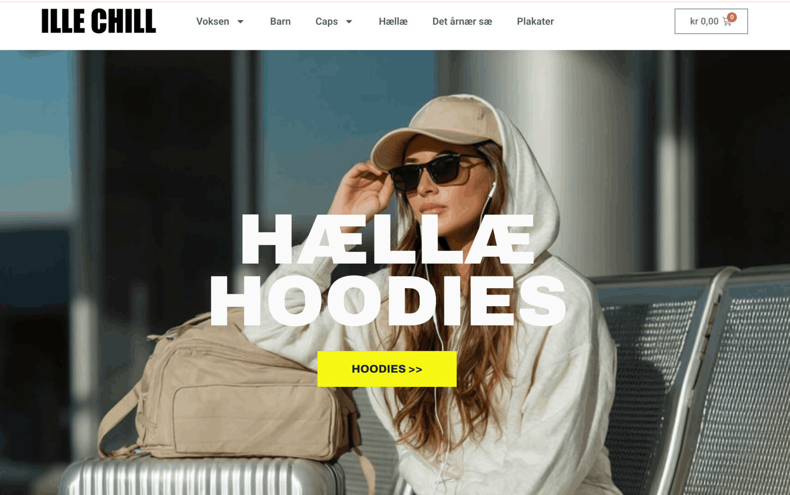

Ille ChillAvviklet
En nettbutikk med Print on Demand (POD), der produktene trykkes når noen bestiller. Her er hva jeg gjorde og hva jeg lærte.

Hvordan starter du en butikk uten å binde penger i varer?
En vanlig nettbutikk krever lager, og lager betyr risiko: varer som blir stående, og penger som er bundet før du har solgt noe. Jeg valgte Print on Demand (POD), der hvert produkt først trykkes når noen bestiller det.
Da ble det viktigste ikke lageret, men alt kunden møter: sortimentet, tonen og opplevelsen fra første besøk til pakken kommer.
Hele butikken, fra idé til drift
- Valgteforretningsmodellen: Print on Demand (POD) via Gelato, så ingenting lages før kunden har bestilt.
- Byggetnettbutikken i WordPress, WooCommerce og Elementor, uten utvikler.
- Satte sammensortimentet: voksen, barn, caps, hoodies og plakater.
- Skaptemerkevaren: navn, kategorier og tekster med dialekt, som «Hællæ» og «Det årnær sæ».
- Lagetden visuelle profilen og tekstene.
- Satte oppflyten fra bestilling til levering, og drev butikken.
Fra Instagram
Bilder fra Instagram-kontoen @ille.chill.
Fra bestilling til levering
Jeg satte opp produktene i Gelato
Jeg valgte ut varer og design.
Produktene ble synket til nettsiden
Gelato publiserte dem via WooCommerce ut på nettsiden.
Kunden bestilte
Bestillingen gikk til Gelato, som sendte den til et trykkeri.
Trykkeriet sendte til kunden
Pakken gikk rett fra trykkeriet til kunden.
Det er mye som må på plass
Å sette opp en hel nettbutikk
Fra produktene til bestillingen.
Avtalene som må inngås
Hva som må avtales for at en bestilling blir en levert pakke.
Verktøyene du trenger
Hvilke verktøy det er behov for, og hvordan de henger sammen.
Kommunikasjon fra A til Å
Hva kunden trenger å få vite, fra bestilling til levering.
Utfordringer
Jeg hadde begrenset innsikt i produksjon og levering. Det var ustabilt, og jeg hadde liten kontroll fra produksjon til levering hos kunden.
Det var også utfordrende å levere i Norge, siden vi står utenfor EU.
Hva jeg satt igjen med
Resultatene var beskjedne. Det jeg satt igjen med, var erfaringen med å sette opp en hel nettbutikk.
Hvorfor jeg avsluttet
Det var utfordringene med produksjon og levering som gjorde at jeg avsluttet.
La oss ta en prat
Send meg en e-post eller en melding på LinkedIn, så tar vi det derfra. Jeg bor i Fredrikstad og tar oppdrag for hele Norge, på nettet eller på stedet.